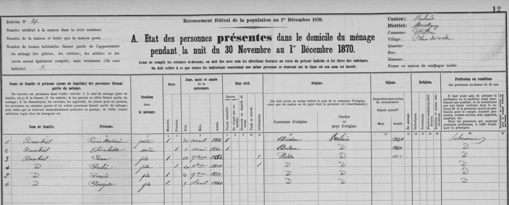
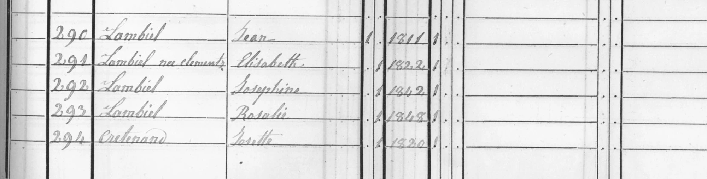

La historia
Marie Elizabet Clemenzo nació en 1821, la menor de los seis hermanos del hogar de Jean Joseph Clemenzo y Marie Catherine Cerisier — el hogar que vivía en [[riddes-valais|Riddes]] con burguesía de [[ardon-valais|Ardon]]. Los censos la documentan de niña y de joven: en 1829 (Riddes, 2.ª clase, «porté à Ardon»), en el censo de Ardon sin fecha y en 1837 (Riddes, 1.ª clase), siempre como fille en el hogar paterno.
Después de 1837 desaparece del hogar Clemenzoz — consistente con un casamiento hacia 1840. Y justo en 1840 el matrimonio Lambiel se instala en Riddes:
Los hijos del hogar Lambiel: Josephine (n. 1842), Rosalie (n. 1848), Julie (n. dic. 1850), Jean (n. nov. 1852), Louis (n. nov. 1855) y Joseph (n. 3-04-1860) — casi con certeza el mismo Joseph Lambiel que en 1880 pensionaba con Janne Marie Clemenzo en Vignes (declaró n. 13-11-1859; desfasaje típico). Ese pensionado es hoy el mejor indicio del parentesco.
El interés no es solo genealógico: los «cousins Lambiel» fueron quienes iniciaron la liquidación de los bienes Clemenzo en 1904-05 (la carta de Conthey, el giro vía [[sion-valais|Sion]] a François Clemenzo y Etienne Clemenzo). Si Elisabeth×Lambiel se confirma, los «cousins» eran literalmente primos hermanos de los emigrados.
Cronología
| Año | Fuente | Qué dice |
|---|---|---|
| 1821 | censos de Riddes 1829 y Ardon s/f | Nace; hija de Jean Joseph Clemenzo y Marie Catherine Cerisier |
| 1829 | Censo de Riddes, 2.ª clase | «Marie Elizabeth», en el hogar paterno, «porté à Ardon» |
| s/f (¿1829?) | Censo de Ardon | «Marie Helizabet», 1821, en el hogar encabezado por su madre |
| 1837 | Censo de Riddes, 1.ª clase | «Élisabeth», fille, en el hogar de Jean Joseph y Catherine — última aparición con los Clemenzoz |
| ~1840 | (inferencia) | Desaparece del hogar paterno; el matrimonio Lambiel se instala en Riddes ese año |
| 1850 | Censo de Riddes, hogar Lambiel (hipótesis) | «Lambiel née Clementz, Elisabeth», n. 1822 sic; con Jean Lambiel (1811) y las hijas Josephine (1842) y Rosalie (1848) |
| 1870 (1 dic) | Recensement fédéral, bulletin n.º 34, Plan de Ville (hipótesis) | «Lambiel, Elisabeth, mère», n. 5-05-1824 sic, origen Ardon, en Riddes desde 1840; con Jean Antoine y los hijos Jean, Julie, Louis y Joseph (n. 3-04-1860) |
Qué falta / hipótesis
Discriminadores pendientes: el acta de matrimonio Lambiel×Clemenzo (~1840, parroquia de Riddes o Ardon) daría la filiación exacta; el censo de Riddes de 1846 debería mostrar al hogar Lambiel con Josephine de ~4 años; y Jean-Yves puede saber con quién casó la Elisabeth de su rama.
Líneas de investigación
- Buscar el acta de matrimonio Lambiel × Clemenzo, ~1840, en las parroquias de Riddes o Ardon — el discriminador definitivo
- Censo de Riddes 1846 en vallesiana.ch: ubicar al hogar Lambiel (deberían figurar Jean, Elisabeth y Josephine de ~4 años)
- Preguntar a Jean-Yves con quién casó la Anne-Marie-Elisabeth (n. 1820) de su rama
- Rastrear a Josephine (n. 1842) y Rosalie (n. 1848) Lambiel, ausentes del hogar en 1870 — ¿casadas en Riddes? ¿firmantes de 1904?
- Verificar la identidad de la «Marie Josephine» del hogar de Marie Catherine Cerisier en 1850: ¿Josephine Clemenzo o Josephine Lambiel?
Fuentes
- Censo de Riddes 1829, 2.ª clase (François Clemenzoz-Jean Joseph Clemenzo-Marie Catherine Cerisier-Joseph Florentine Clemenzo-Joseph Marie Clemenzo-Janne Marie Clemenzo-Marie Henriette Clemenzo-p76-1829-riddes-2clase.webp)
- Censo de Ardon, s/f (censo-1.webp, censo-2.webp)
- Censo de Riddes 1837, 1.ª clase (François Clemenzoz-Jean Joseph Clemenzo-Marie Catherine Cerisier-Janne Marie Clemenzo-Marie Henriette Clemenzo-p76-1837-riddes-censo.webp)
- Censo de Riddes 1850, hogar Lambiel (p76-1850-riddes-lambiel-censo.webp)
- Recensement fédéral 1870, bulletin n.º 34, Plan de Ville (p76-1870-riddes-lambiel-censo.webp)
- Bulletin de ménage 1880 de Janne Marie Clemenzo (Joseph Lambiel pensionnaire) — ver ficha Janne Marie Clemenzo
- Carta de los «cousins» de 1904 / liquidación de 1905 — ver fichas François Clemenzo y Janne Marie Clemenzo
Documentos


Censos

